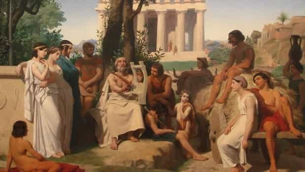
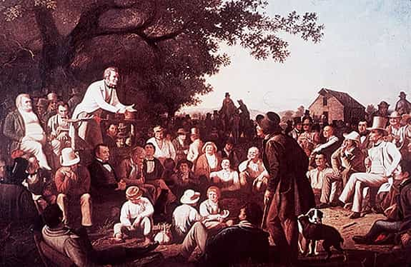
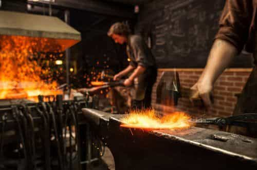
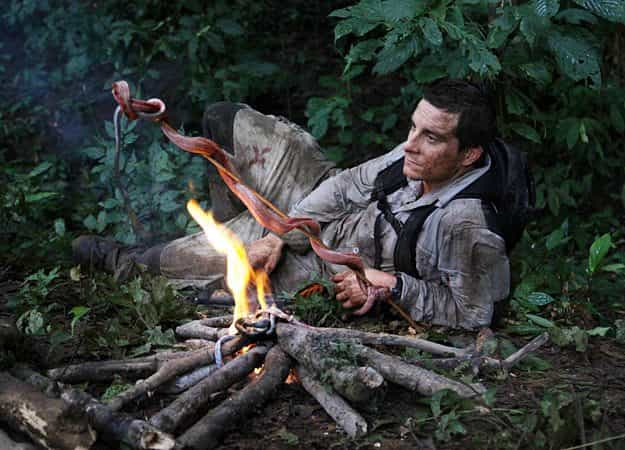
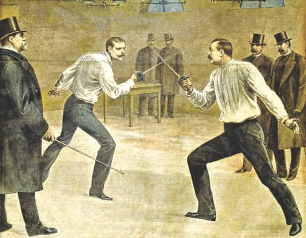
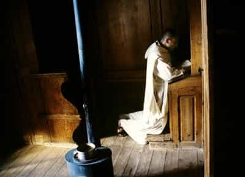

Corey is an iconoclast and the author of 'Man's Fight for Existence'. He believes that the key to life is for men to honour their primal nature. Visit his new website at primalexistence.com


With our society turning men into domesticated economic units, and with new technological gadgets turning us more and more into mere subjects who respond to machines rather than control them, we as men and people are becoming dull and cultureless. Against this materialist force, I think it’s imperative that we rediscover and restore some of our past cultural practices so that we can preserve our sophistication as human beings and as independent men.
With computers, smartphones, and other electronic communication devices becoming universal tools in our age, hand-written words have become the casualty to pave the way for utility and efficiency. Stringing words together is becoming less of an art and more of a task—a mere means to an end. You can tell just how sloppy writing has become today as the dependence on auto-correct allows the typer to never think about his use of words and letters. The use of language and the written words themselves are becoming uglier with each passing day as less and less people use a pen for anything more than filling out forms and signing documents.
To counter this trend, I propose writing as much as possible by hand whenever the opportunity allows for it. I’ve recently re-discovered the joy of writing longhand through my language studies, prompting me to buy my first fountain pen (yes, it really is worth it). You start to feel like you’re in a different world when you use a plain old pen and paper with nothing else to distract you. And unlike using a word processor on your computer, writing by hand makes you focus and be conscious of every word you write. With each and every letter requiring your patience and dedication, the process of writing itself becomes an art much like painting or sculpting.

Long before movies, television, radio, and even books, epic tales were recited and passed down the generations through the word of mouth. And these weren’t just stories for entertainment, but were profound practices that instilled the cultural spirit of people along with their shared identity. Think of the epic poems of the past including the Iliad, Beowulf, Shahnameh, and more. If you ever listen to the Quran being recited, you can start to understand how profoundly its words affect the believers of Islam. Words become the soul of people.
You can start practicing now by choosing a work that speaks to your heart to memorize and make it yours. Recitation takes patience—especially with epic works—but it will challenge and develop your ability to concentrate, visualize, and use your passion to guide your words. In our world where everything is being dumbed down to be attention-grabbing, being able to memorize and recall long passages will make you stand out from the rest. You will have a superior ability to remember things in all other areas and it will transform you as a man of culture in a world where all forms of art are being swallowed up by consumerism.

Rhetoric is also another lost art form that’s forgotten by our generation that prefers to send rapid text messages and memes while slouched over an electronic screen. The great men of ancient Rome valued this skill very much and so should we. Oratory is one of the more sophisticated arts that involve much more than just the spoken words themselves. Rhetoric is based on knowledge and logic, and it involves your body language as well as the passion of your voice. It’s a form of art where the way you speak the words matter just as much (if not more) than their actual meaning. And as a force of persuasion, it is the sword of man’s political power.
Any man serious about politics or wishing to improve his charisma for better social standing should prioritize this art above all else.

It’s no secret that men love working with their hands. Like our propensity for hunting, it is an ingrained trait of all men necessary for our roles as creators. It’s quite something just watching a modern day blacksmith like Ric Furrer take his time to forge a sword as masterfully as the blacksmiths did centuries ago. The total focus and dedication to the work is something all men can admire. Unfortunately, with everything now made in third world factories, prisons, or 3D printers, handcrafting is becoming another lost art in our modern society.
It is my opinion that all men should possess a skill or a profession that involves the skillful use of hands, be it repairing machines, carving woods, constructing, playing the piano, being able to handle weapons, and so on. If you don’t have anything yet, find something and start practicing now, and keep at it. You will be rewarded handsomely in your journey.

Some may wonder why we should even bother with survival skills, but I believe it is an essential skill to have in our uncertain times. I think it’s quite appalling that we’ve been so conditioned by our society that most of us don’t even know the basic thing about purifying and storing water or making fire, let alone how to hunt animals. We’ve been domesticated like cattle in the farm we call cities to rely on wage slavery, grocery stores, and magical water taps to ensure our own survival.
Learning how to survive outside the comforts of modern society will also strengthen you as it tests your resolve and wits. It is not a surprise that this skill is one of the primary area of focus in training elite soldiers around the world. In the end, you can define your independence by how much money you have saved up or you can define it by your ability to survive in whatever conditions you may find yourself in without relying on the state. I think I know which will be more important in the future.

Why they decided to get rid of duels, I don’t know (actually, I do: the government doesn’t want us to be independent). But I think allowing men to duke it out in an honor based system (without facing consequences imposed by a third party) can solve lot of problems in this world. It doesn’t even have to be with swords and pistols, just let men sort out issues on their own using their fists as long as both parties agree to it. They already allow it in NHL, why not everywhere else?

From the pious to the intellectual, retreats allowed greater men to seek wisdom and spiritual enlightenment away from the petty distractions of the material world. But today, in a world as busy as ours that is more connected than ever before in history, it is becoming progressively more difficult to find peace necessary to discover ourselves. Instead, we are perpetually distracted, constantly seeking the most superficial information to stimulate our shallow minds. Where is the deep level of thinking that our ancestors used to practice?
Although I don’t think seeking retreat should necessarily be a permanent way of life, I believe most men will benefit from a regular or a prolonged refuge into their own souls. Even if you don’t need anything but your own mind and the volition to seek enlightenment from within, I strongly suggest men take some time away from our so-called civilization at least once in their lifetime.
Male initiation rituals existed almost universally in the past because of its symbolic significance in transforming boys into men. It was important for tribal societies to know that they could place their trust on these prospective men to protect and provide for their societies, which is why many of these rituals involve testing strength, skills, courage, and endurance to pain. This process created clear distinction between those who are men and those who are not, strengthening the foundation of the tribe.
I don’t think it’s a coincidence that many “men” today are weak and effeminate as there is no official standard from which to declare someone a “man” other than his age. This is also why many teenagers and those in their early 20’s are either hopelessly lost and helpless as they’ve been abandoned by the society, with others going the opposite route to engage in high-risk behaviours that are seemingly foolish as they try to prove their manhood before the modern world that does not care. No, our modern society is only interested in whether men today are capable of following the rules, obediently doing what they’re told, and whether they can fulfill their roles as drones. Without guidance, without a masculine purpose, and without a world that allows them to simply be themselves, men will continue to be lost and exploited.
To learn more about the nature of masculinity and how our modern world contradicts it, read ‘Man’s Fight for Existence.’ Also follow me on my new blog, primalexistence.com.
Read More: How To Restore Civilization By Following St. Benedict’s Example